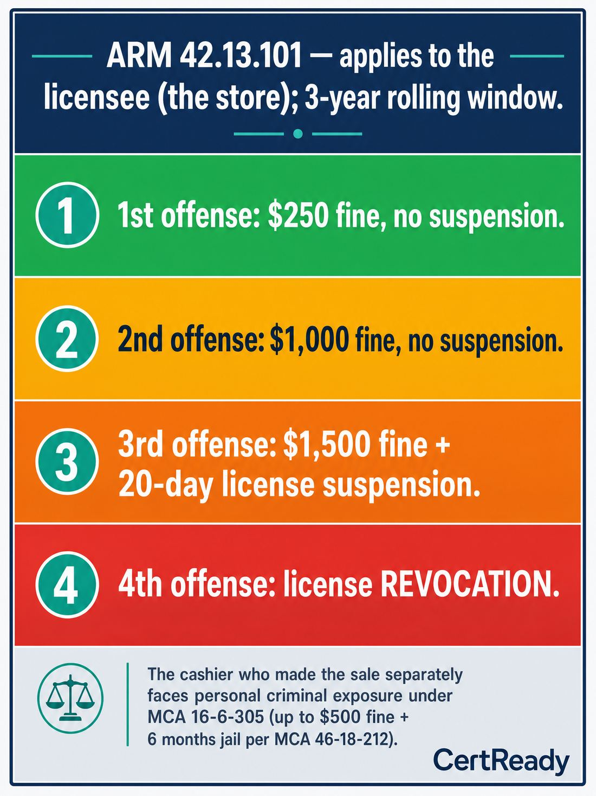

MCA 16-6-305(1): It is unlawful to sell, give, or otherwise provide alcoholic beverages to a person under 21. Personal criminal penalty for the cashier: up to $500 fine, up to 6 months jail, or both.
Outcomes: K7
Off-premises course module
ARM 42.13.101 progressive penalties; how to spot and refuse decoys, proxy buyers, and shoulder-taps
This page mirrors the student lesson content and infographics so Montana CARD can review it without using the CertReady LMS.
MCA 16-6-305(1): It is unlawful to sell, give, or otherwise provide alcoholic beverages to a person under 21. Personal criminal penalty for the cashier: up to $500 fine, up to 6 months jail, or both.
Outcomes: K7

Outcomes: K7
Consequences from one sale, by who carries them:
**Cashier
criminal misdemeanor** under MCA 16-6-305 (up to $500 fine and/or 6 months jail)
personal liability
**Cashier
loss of job** under store policy almost universally
**Licensee (store)
administrative penalty** under ARM 42.13.101 (the progressive fine/suspension/revocation schedule above)
**Licensee (store)
possible civil dram-shop exposure** under MCA 27-1-710 if the statutory triggers are met (e.g., sale-to-minor without reasonable age verification) and a third party is later injured One missed ID check can produce all of these on the cashier and the store.
Outcomes: K7
Why two penalty tracks exist, and who pays which. Montana's sale-to-minor rules sit on two parallel tracks. Track one (criminal, against the person who made the sale): MCA 16-6-305 makes the sale a misdemeanor and MCA 46-18-212 sets the maximum penalty at up to $500 fine and up to 6 months in county jail. The defendant is the cashier or server personally - not the store. Track two (administrative, against the licensee): ARM 42.13.101 applies the progressive schedule ($250 / $1,000 / $1,500 + 20-day suspension / revocation) to the licensee's record over a rolling 3-year lookback. The licensee carries this track. One sale can trigger both tracks at the same time: the cashier is charged criminally and the licensee is fined administratively, neither one excludes the other. This is why a single missed ID check has consequences that follow the cashier (criminal record, job loss, possible jail) AND the store (mounting administrative fines, suspension, eventual revocation).
Outcomes: K7
The 'intoxicating quantity' exception is narrower than people think. MCA 16-6-305(1)(a) contains a few carve-outs to the under-21 prohibition: parents/guardians may provide alcohol to their own under-21 child, but only in nonintoxicating quantities and in a private setting (not at a retail counter); a licensed physician or dentist may provide for medicinal purposes; a pharmacist may dispense on a physician's prescription; an ordained minister or priest may provide in connection with a religious observance. None of these exceptions permit an off-premise retail sale to a minor, regardless of what the customer says about parental consent. 'Intoxicating quantity' is defined at MCA 16-6-305(1)(c) as a quantity sufficient to produce a 0.05+ BAC or substantial/visible impairment - meaning even the parent-to-child carve-out caps the amount, it doesn't open a retail channel. A parent who walks in saying 'I'm buying this for my 17-year-old' gets refused. Every time.
Outcomes: K6, K7
Montana DOR runs compliance checks at off-premises retail. A compliance-check participant
often under 21 and supervised by enforcement staff
walks in and tries to buy alcohol. They typically use their real ID and do not lie about their age. The check happens with no warning. If you sell, the citation is real and goes on the licensee's record. If you ID and refuse, you pass.
Outcomes: K6
Outcomes: K6
Treat every sale like it's a compliance check.
Card anyone who LOOKS under 30, every time, no exceptions
Do the DOB math, not just glance at the year
Check expiration
Cross-check with a question if anything feels off The cost of the habit is 5 seconds. The cost of skipping is a fine, your job, and a personal misdemeanor.
Outcomes: K6
Outcomes: K6
What do you do?
Scenario 1: The casual admission. A 30-year-old comes to your register with a 12-pack. As you ring up, he says casually, "This is actually for my nephew waiting outside, he just turned 20 and wanted a beer for the game."
Outcomes: P3, K6
What's the right next step?
Scenario 2: The handed-over cash. A 19-year-old you carded and refused walks out. Two minutes later, a 26-year-old you've never seen before walks in, picks up the same 30-pack, comes to the register, and pays in cash. As he leaves, you see him hand the case to the same 19-year-old in the parking lot.
Outcomes: P3, K6
Sell or refuse?
Scenario 3: The 'I forgot my ID' callback. A regular customer who looks ~25 comes in, picks up a six-pack, and at the register says, 'Oh shoot, left my wallet at home
I'll just leave the beer here, can you set it aside? I'll be back in 20.' Twenty minutes later, a different person you've never seen
looks late 30s, has an ID showing age 38
walks in, asks if you set aside a six-pack, and pays cash for it.
Outcomes: P3, K6
Outcomes: P3, K6
A clean refusal protects you on three fronts. First, the log entry is your evidence in any subsequent DOR investigation under ARM 42.13.101
the licensee's progressive-penalty record depends on whether a sale actually happened, and a refused-and-documented transaction is not a sale. Second, the log entry is your evidence in any criminal proceeding under MCA 16-6-305
a cashier who can produce a contemporaneous refusal log is in a fundamentally different position from one who relies on memory months later. Third, the log entry is the data your store uses to spot patterns: same customer trying multiple cashiers, same vehicle returning weekly, same fake-ID design across multiple attempts. Patterns become enforcement when DOR or local police get the call. Your one log entry contributes to the next round of compliance work, even if you never see it.
Outcomes: P3, K6
Passing score: 80%
Montana's administrative penalty on a licensee for sale-to-minor offenses is a progressive schedule over a rolling 3-year period. What is the practical takeaway for a licensee?
Correct answer: b. Penalties escalate with each offense up to license revocation, and a first offense can be reduced to a reprimand if all staff were trained
Outcomes: K7
What happens to the licensee on a 4th sale-to-minor offense?
Correct answer: b. License revocation
Outcomes: K7
A customer who admits at the register that the alcohol is for someone under 21 should still be sold to as long as the buyer themselves is over 21.
Correct answer: false. False
Outcomes: P3, K6
Which is a shoulder-tap red flag at a Montana off-prem retailer?
Correct answer: a. An adult is asked at the door 'go in for me'
Outcomes: K6
In a Montana DOR compliance check, the underage decoy will:
Correct answer: b. Use their real ID and not lie about their age
Outcomes: K6
Name two consequences a cashier personally faces from a confirmed sale-to-minor offense.
Outcomes: K7